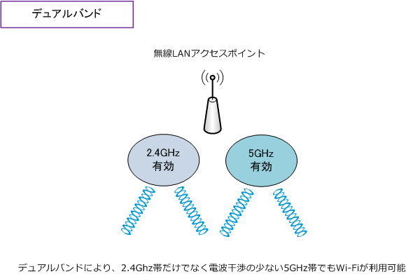
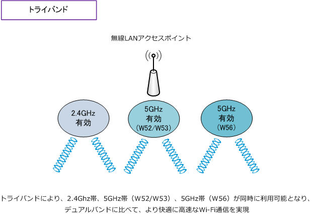
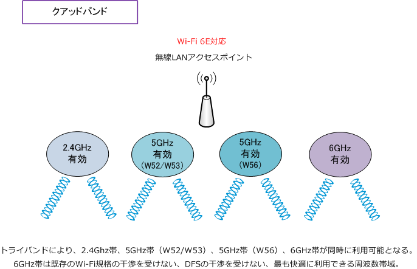

dual-band / tri-band / quad-band
デュアルバンド（dual-band）とは
デュアルバンドとは、2.4GHz帯と5GHz帯の両方の周波数で同時に無線通信できる通信方式のことです。 電波干渉の発生しやすい2.4GHz帯だけでなく、電波干渉が発生しにくい5GHz帯を利用できることから 1つの周波数帯だけを利用するシングルバンドに比べると快適なWi-Fi通信を実現できます。

トライバンド（tri-band）とは
トライバンドとは、2.4GHz帯、5GHz帯（W52/W53）、5GHz帯（W56）の3つの周波数で同時に 無線通信できる通信方式のことです。デュアルバンドよりも同時に利用できるチャネルが多くなり、 より多くのWi-Fi機器が接続することが可能で、快適に高速なWi-Fi通信を実現することができます。
トライバンド対応の無線LANアクセスポイントでは、DFS（Dynamic Frequency Selection）機能で 5GHz帯の1つのチャンネルが気象レーダーや航空レーダーを検知して停波した場合でも、もう1つの 5GHz帯のチャンネルに切り替えて使用することができます。ただし、無線LANのAPのメーカーにより チャネルの切り替わり時に、一時的な通信切断が発生する可能性があります。

5GHz帯のW52、W53、W56の特長や違いは以下の通りです。
| 5GHz帯 | 利用できる場所 | 説明 |
|---|---|---|
| W52 | 屋内のみ | 5GHz帯で最も標準的に利用されている周波数帯域 |
| W53 | 屋内のみ | 航空レーダーや気象レーダーと干渉する可能性がある周波数帯域 |
| W56 | 屋内、屋外ともに可 | 航空レーダーや気象レーダーと干渉する可能性がある周波数帯域 |
クアッドバンド（quad-band）とは
クアッドバンドとは、2.4GHz帯、5GHz帯（W52/W53）、5GHz帯（W56）、6GHz帯の4つの周波数で 同時に無線通信できる通信方式のことです。4つの周波数帯を利用できる点よりも、6GHz帯を利用可能で あることが最大の特長です。特筆すべきは、6GHz帯ではDFSの制御が不要となる点です。
動的周波数選択機能であるDFSは、航空レーダーや気象レーダーなどが近くにあることを検知した場合は 無線LANアクセスポイントは、Wi-Fi通信が使用する電波を航空/気象レーダーと干渉しない帯域に変更し その結果、Wi-Fi機器の通信速度の低下や一時的な通信切断などが発生していました。しかし6GHz帯では そのような干渉は発生せず、2.4GHzや5GHz帯と比較にならない快適な高速無線LAN通信を実現できます。

6GHz帯（5,925MHz～6,425MHz）を使用するということは、無線APはWi-Fi 6Eに対応した製品である 必要があります。802.11axの規格では「Wi-Fi 6」を策定しただけでなく「Wi-Fi 6E」も策定しています。
| 規格名 | Wi-Fiアライアンス名称 | 策定時期 | 使用する周波数帯 | 理論上の最大通信速度 |
|---|---|---|---|---|
| IEEE802.11b | - | 1999年 | 2.4GHz | 11Mbps |
| IEEE802.11a | - | 1999年 | 5GHz | 54Mbps |
| IEEE802.11g | - | 2003年 | 2.4GHz | 54Mbps |
| IEEE802.11n | Wi-Fi 4 | 2009年 | 2.4GHz / 5GHz | 600Mbps |
| IEEE802.11ac | Wi-Fi 5 | 2013年 | 5GHz | 6.9Gbps |
| IEEE802.11ax | Wi-Fi 6 | 2019年 | 2.4GHz / 5GHz | 9.6Gbps |
| IEEE802.11ax | Wi-Fi 6E | 2021年 | 2.4GHz / 5GHz / 6GHz | 9.6Gbps |